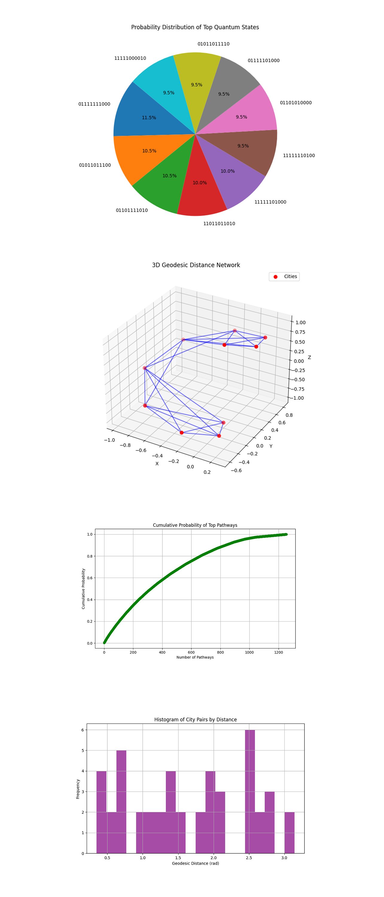
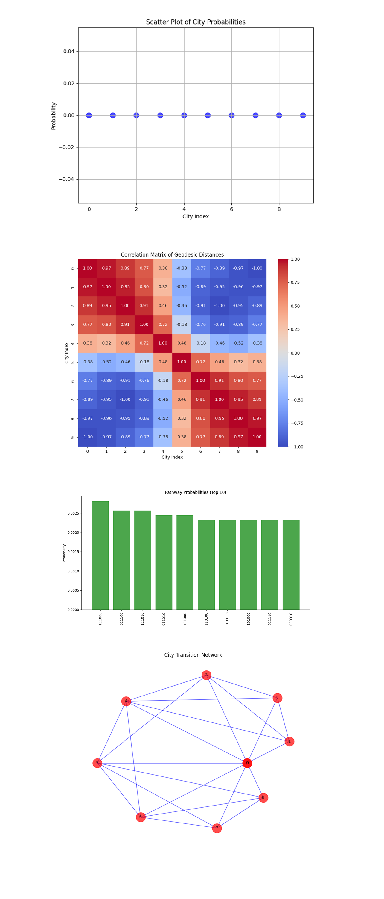

Exploring the Traveling Salesman Problem in Non-Euclidean Spaces on IBM’s 127-Qubit Quantum Computer
1. Problem
To make sure optimal circuit execution, backend calibration data is loaded and analyzed. Including:
√x (sx) error: Error rate for single qubit operations.
T_1 (Relaxation time): Time for a qubit to return to its ground state.
T_2 (Decoherence time): Time over which a qubit maintains coherence.
The best qubits are selected based on the following sorting criteria:
Minimize √x error (ascending order).
Maximize T_1 (descending order).
Maximize T_2 (descending order).
Select N + 1 qubits (where N is the number of cities) based on the best T_1, T_2, and lowest error rates.
2. City Representation on the Bloch Sphere
Cities are placed on the surface of a sphere using spherical coordinates (θ, ϕ)
θ: Polar angle.
ϕ: Azimuthal angle.
x = sin(θ) cos(ϕ)
y = sin(θ) sin(ϕ)
z = cos(θ)
3. Quantum Circuit Initialization
Quantum register Q_R of N + 1 qubits (representing cities).
Classical register C_R of N + 1 bits for measurement.
Apply the Hadamard gate to each qubit to create a uniform superposition:
- - - - - - - - - - - - - 2^(N + 1) -1
∣ψ⟩ = 1/sqrt(2^(N + 1)) * ∑ ∣i⟩
- - - - - - - - - - - - - i = 0
4. Encoding Inter-City Distances
Calculate angular distances Δθ between cities based on their dot products:
cos(Δθ) = u ⋅ v
Encode distances as R_y rotations:
R_y(θ) =
[ cos(θ/2), −sin(θ/2)
sin (θ/2), cos(θ/2) ]
5. Entanglement for Pathway Representation
Apply CNOT gates between pairs of qubits to entangle them, representing possible transitions between cities.
6. Noise Simulation
Introduce noise perturbations by applying small random rotations to each qubit:
R_x(π/(16(i + 1)))
R_y(π/(16(i + 1)))
R_z(π/(16(i + 1)))
7. Measurement
Measure all qubits in the computational basis to determine the most probable pathways.
8. Results and Visual
Measurement counts are retrieved. Results are saved to a json. A histogram of the run results is visualized.
The top result is 01111111000 with 23 occurrences. The higher occurrence means that this pathway minimizes the geodesic distances between cities in this non-Euclidean geometry. The proximity of occurrence counts among the top results shows that multiple solutions are near optimal. The significant drop in occurrence counts after the top solutions shows the capability to filter out suboptimal pathways. Top 10 Results:
01111111000 - 23
01101111010 - 21
01011011100 - 21
11111110100 - 19
01111001010 - 19
11011111000 - 17
01111001100 - 17
11111101100 - 16
11111010000 - 15
11111010110 - 15

The Histogram of Counts above (code below) displays the top 20 quantum states (bitstrings) and their corresponding measurement counts. The highest count corresponds to bitstring 01111111000. A relatively even distribution of counts among the other bitstrings suggests the quantum system also explored alternative pathways.
The 3D Bloch Sphere Representation of Cities above (code below) visualizes the cities (nodes) distributed on the Bloch sphere. Each point represents a city's position encoded in 3D Cartesian coordinates derived from spherical mappings. The spatial distribution shows that cities are evenly spaced on the surface.
The Heatmap of Geodesic Distances above (code below) shows a matrix visualizing the geodesic distances (rotation angles) between each pair of cities. Darker colors are shorter distances, while lighter colors show larger distances. The diagonal (zero distances) confirms the self loop, with off diagonal elements encoding connected distances.
The Overlay of High Probability Pathways on Bloch Sphere visual above (code below) shows the top high probability pathways overlay the city positions on the Bloch sphere, connecting nodes according to the selected bitstrings. The overlay shows how the quantum system prioritizes routes between closely spaced cities (shorter geodesics). The blue connection indicates that the quantum system identified this particular connection as being part of an optimal or near optimal solution.

The Probability Distribution of Top Quantum States (Pie Chart) above (code below) shows a proportional representation of the top 10 quantum states by measurement counts. Each slice corresponds to the likelihood of a specific pathway being the optimal solution. The even distribution suggests that no overwhelming bias or noise influenced the system's behavior, ensuring reliable optimization.
The 3D Geodesic Distance Network above (code below) shows a 3D visualization of cities (nodes) connected by edges representing geodesic distances. The network shows which cities are most directly connected by short geodesics, corresponding to favorable transitions in the TSP. Dense connections in certain regions suggest clustering, where local optimizations could significantly impact the overall solution.
The Cumulative Probability of Top Pathways above (code below) shows a line plot depicting how the cumulative probability increases as more pathways are considered, ranked by their measurement counts. The rapid initial rise shows that the top pathways account for a significant portion of the total probability, affirming the quantum system's ability to focus on high quality solutions.
The Histogram of City Pairs by Distance above (code below) shows a histogram grouping city pairs based on their geodesic distances, derived from the spherical encoding. Shorter distances (leftmost bars) represent closer city pairs, which likely correspond to transitions in high probability pathways.

The Scatter Plot of City Probabilities above (code below) shows probabilities associated with each city, aggregated across all pathways. This means a balanced exploration of pathways without overwhelming bias, which aligns with the diverse spatial arrangements of cities on the Bloch sphere.
The Correlation Matrix Heatmap above (code below) shows the correlation between geodesic distances of different cities. Positive correlations (red) indicate pairs of cities with similar distance relationships, while negative correlations (blue) suggest divergent patterns. The high correlations among nearby cities show clusters or regions of the spherical geometry, where certain nodes share similar transition behaviors.
The Pathway Probability Bar Chart above (code below) shows probabilities of the top 10 pathways, ranked by their quantum measurement counts. The relatively flat distribution among the top pathways means that multiple solutions are viable, reflecting the quantum system's capability to explore equivalent routes efficiently.
The City Transition Network Graph above (code below) shows a graphical representation of cities as nodes, with edges connecting cities based on significant geodesic distances. The dense connections between certain cities reveal localized clusters, suggesting hubs that could play a critical role in the optimal pathways. The sparsity of connections across distant nodes shows the influence of curved geometry, where long transitions are less likely to contribute to high probability pathways.
In the end, this experiment explored the Traveling Salesman Problem in non-Euclidean geometry, using quantum computation to optimize pathways across cities mapped to the surface of a Bloch sphere. By encoding geodesic distances as quantum rotations and using entanglement, the experiment simulated transitions between cities while accounting for the complex, curved geometry. The results show the quantum system's ability to distribute probabilities across multiple pathways, finding the pathway that minimizes the geodesic distance between cities while maintaining a large exploration of alternatives.
Code:
# Imports
import numpy as np
import json
import pandas as pd
import logging
from qiskit import QuantumCircuit, QuantumRegister, ClassicalRegister, transpile
from qiskit_ibm_runtime import QiskitRuntimeService, Session, SamplerV2
from qiskit.visualization import plot_histogram
import matplotlib.pyplot as plt
from scipy.spatial.transform import Rotation as R
# Logging
logging.basicConfig(level=logging. INFO, format='%(asctime)s - %(levelname)s - %(message)s')
logger = logging.getLogger(__name__)
# Load calibration data
def load_calibration_data(file_path):
logger. info("Loading calibration data from %s", file_path)
calibration_data = pd. read_csv(file_path)
calibration_data.columns = calibration_data.columns.str.strip()
logger. info("Calibration data loaded successfully")
return calibration_data
# Parse calibration data
def select_best_qubits(calibration_data, n_qubits):
logger. info("Selecting the best qubits based on T1, T2, and error rates")
qubits_sorted = calibration_data.sort_values(by=['\u221ax (sx) error', 'T1 (us)', 'T2 (us)'], ascending=[True, False, False])
best_qubits = qubits_sorted['Qubit'].head(n_qubits).tolist()
logger. info("Selected qubits: %s", best_qubits)
return best_qubits
# Backend calibration data
calibration_file = '/Users/Downloads/ibm_brisbane_calibrations_2024-12-19T17_33_02Z.csv'
calibration_data = load_calibration_data(calibration_file)
# Number of cities in the TSP
num_cities = 10
# Select the best qubits
best_qubits = select_best_qubits(calibration_data, num_cities + 1)
# IBMQ
logger. info("Setting up IBM Q service")
service = QiskitRuntimeService(
channel='ibm_quantum',
instance='ibm-q/open/main',
token='YOUR_IBM_API_KEY_O-`'
)
backend_name = 'ibm_brisbane'
backend = service.backend(backend_name)
logger. info("Backend selected: %s", backend_name)
# Quantum and classical registers
qr = QuantumRegister(num_cities + 1, 'city')
cr = ClassicalRegister(num_cities + 1, 'meas')
qc = QuantumCircuit(qr, cr)
# Map cities to Bloch sphere and create initial state
def encode_cities_on_bloch(num_cities):
"""Generates coordinates for cities on a sphere."""
theta = np.linspace(0, np.pi, num_cities)
phi = np.linspace(0, 2 * np.pi, num_cities, endpoint=False)
cities = []
for t, p in zip(theta, phi):
x = np.sin(t) * np.cos(p)
y = np.sin(t) * np.sin(p)
z = np.cos(t)
cities.append((x, y, z))
return cities
cities_coords = encode_cities_on_bloch(num_cities)
logger. info("Encoded cities on Bloch sphere with coordinates: %s", cities_coords)
# Initialize qubits
for i in range(1, num_cities + 1):
qc.h(qr[i])
# Entangle qubits to represent possible transitions between cities
for i in range(1, num_cities + 1):
for j in range(i + 1, num_cities + 1):
qc. cx(qr[i], qr[j])
# Encode distances as rotation angles
def calculate_rotation_angles(cities_coords):
"""Calculate rotation angles based on geodesic distances."""
angles = []
for i in range(len(cities_coords)):
row = []
for j in range(len(cities_coords)):
if i != j:
dot_product = np. dot(cities_coords[i], cities_coords[j])
angle = np.arccos(np.clip(dot_product, -1.0, 1.0))
row.append(angle)
else:
row.append(0)
angles.append(row)
return angles
rotation_angles = calculate_rotation_angles(cities_coords)
logger. info("Calculated rotation angles: %s", rotation_angles)
# Apply rotations to encode distances
for i in range(1, num_cities + 1):
for j in range(1, num_cities + 1):
if i != j:
qc.ry(rotation_angles[i-1][j-1], qr[j])
# Add noise (perturbations)
for i in range(num_cities):
qc.rx(np.pi / (16 * (i + 1)), qr[i])
qc.ry(np.pi / (16 * (i + 1)), qr[i])
qc.rz(np.pi / (16 * (i + 1)), qr[i])
# Measure
qc.measure(qr, cr)
# Transpile
logger. info("Transpiling the quantum circuit for the backend")
qc_transpiled = transpile(qc, backend=backend, optimization_level=3)
logger. info("Circuit transpilation complete")
# Execute
shots = 8192
with Session(service=service, backend=backend) as session:
sampler = SamplerV2(session=session)
logger. info("Executing the circuit on the backend")
job = sampler. run([qc_transpiled], shots=shots)
job_result = job.result()
# Extract counts
bit_array = job_result._pub_results[0]['__value__']['data']['meas'] # Access the 'meas' field
counts = bit_array.get_counts()
# Save json
results_data = {
"counts": counts,
"cities_coordinates": cities_coords,
"rotation_angles": rotation_angles
}
file_path = '/Users/Documents/Non_Euclidean_TSP_Results_0.json'
with open(file_path, 'w') as f:
json.dump(results_data, f, indent=4)
logger. info("Results saved to %s", file_path)
# Visual
plot_histogram(counts)
plt.title("TSP in Non-Euclidean Space: Measurement Results")
plt. show()
Code For All Visuals
# Imports
import matplotlib.pyplot as plt
from mpl_toolkits.mplot3d import Axes3D
import numpy as np
import json
import networkx as nx
import seaborn as sns
# Load results
file_path = '/Users/Documents/Non_Euclidean_TSP_Results_0.json'
with open(file_path, 'r') as file:
data = json.load(file)
counts = data['counts']
cities_coords = np.array(data['cities_coordinates'])
rotation_angles = np.array(data['rotation_angles'])
# Histogram of Counts
def plot_histogram_counts(counts):
sorted_counts = sorted(counts.items(), key=lambda x: x[1], reverse=True)[:20]
bitstrings, values = zip(*sorted_counts)
plt.figure(figsize=(12, 6))
plt. bar(bitstrings, values, color='blue', alpha=0.7)
plt.xticks(rotation=90)
plt.title("Top 20 Quantum States by Counts")
plt.xlabel("Bitstring")
plt.ylabel("Counts")
plt. show()
# 3D Bloch Sphere Representation
def plot_bloch_sphere(cities_coords):
fig = plt.figure(figsize=(10, 8))
ax = fig.add_subplot(111, projection='3d')
ax.scatter(cities_coords[:, 0], cities_coords[:, 1], cities_coords[:, 2], color='red', s=50)
ax.set_title("Cities on the Bloch Sphere")
ax.set_xlabel("X")
ax.set_ylabel("Y")
ax.set_zlabel("Z")
plt. show()
# Heatmap of Rotation Angles
def plot_rotation_heatmap(rotation_angles):
plt.figure(figsize=(10, 8))
plt.imshow(rotation_angles, cmap='viridis', interpolation='nearest')
plt.colorbar(label="Rotation Angle (rad)")
plt.title("Heatmap of Geodesic Distances (Rotation Angles)")
plt.xlabel("City Index")
plt.ylabel("City Index")
plt. show()
# Overlay High-Probability Pathways
def plot_high_probability_paths(cities_coords, counts):
top_paths = sorted(counts.items(), key=lambda x: x[1], reverse=True)[:5]
fig = plt.figure(figsize=(10, 8))
ax = fig.add_subplot(111, projection='3d')
# Plot cities
ax.scatter(cities_coords[:, 0], cities_coords[:, 1], cities_coords[:, 2], color='red', s=50)
# Overlay pathways
for path, _ in top_paths:
indices = [int(bit) for bit in path]
for i in range(len(indices) - 1):
ax.plot(
[cities_coords[indices[i], 0], cities_coords[indices[i + 1], 0]],
[cities_coords[indices[i], 1], cities_coords[indices[i + 1], 1]],
[cities_coords[indices[i], 2], cities_coords[indices[i + 1], 2]],
color='blue', alpha=0.7
)
ax.set_title("High-Probability Pathways on Bloch Sphere")
ax.set_xlabel("X")
ax.set_ylabel("Y")
ax.set_zlabel("Z")
plt. show()
# Call
plot_histogram_counts(counts)
plot_bloch_sphere(cities_coords)
plot_rotation_heatmap(rotation_angles)
plot_high_probability_paths(cities_coords, counts)
# Probability Distribution of Quantum States (Pie Chart)
def plot_probability_pie(counts):
sorted_counts = sorted(counts.items(), key=lambda x: x[1], reverse=True)[:10]
labels, values = zip(*sorted_counts)
total = sum(counts.values())
values = [v / total for v in values]
plt.figure(figsize=(8, 8))
plt.pie(values, labels=labels, autopct="%1.1f%%", startangle=140, colors=plt. cm.tab10.colors)
plt.title("Probability Distribution of Top Quantum States")
plt. show()
# 3D Geodesic Distance Network
def plot_geodesic_network(cities_coords, rotation_angles):
fig = plt.figure(figsize=(10, 8))
ax = fig.add_subplot(111, projection='3d')
# Add cities
ax.scatter(cities_coords[:, 0], cities_coords[:, 1], cities_coords[:, 2], color='red', s=50, label="Cities")
# Add edges
num_cities = len(cities_coords)
for i in range(num_cities):
for j in range(i + 1, num_cities):
if rotation_angles[i][j] < np.pi / 2:
ax.plot(
[cities_coords[i, 0], cities_coords[j, 0]],
[cities_coords[i, 1], cities_coords[j, 1]],
[cities_coords[i, 2], cities_coords[j, 2]],
color='blue', alpha=0.6
)
ax.set_title("3D Geodesic Distance Network")
ax.set_xlabel("X")
ax.set_ylabel("Y")
ax.set_zlabel("Z")
plt.legend()
plt. show()
# Cumulative Probability of Top Pathways
def plot_cumulative_probability(counts):
sorted_counts = sorted(counts.items(), key=lambda x: x[1], reverse=True)
labels, values = zip(*sorted_counts)
total = sum(values)
cumulative_probs = np.cumsum(values) / total
plt.figure(figsize=(10, 6))
plt.plot(range(1, len(cumulative_probs) + 1), cumulative_probs, marker='o', linestyle='-', color='green')
plt.title("Cumulative Probability of Top Pathways")
plt.xlabel("Number of Pathways")
plt.ylabel("Cumulative Probability")
plt.grid(True)
plt. show()
# Histogram of City Pairs by Distance
def plot_distance_histogram(rotation_angles):
distances = rotation_angles[np.triu_indices(len(rotation_angles), k=1)]
plt.figure(figsize=(10, 6))
plt.hist(distances, bins=20, color='purple', alpha=0.7)
plt.title("Histogram of City Pairs by Distance")
plt.xlabel("Geodesic Distance (rad)")
plt.ylabel("Frequency")
plt.grid(True)
plt. show()
# Call
plot_probability_pie(counts)
plot_geodesic_network(cities_coords, rotation_angles)
plot_cumulative_probability(counts)
plot_distance_histogram(rotation_angles)
# Scatter Plot of City Probabilities
def plot_city_probabilities(counts, cities_coords):
total_counts = sum(counts.values())
probabilities = {key: value / total_counts for key, value in counts.items()}
city_probs = [sum(probabilities.get(bin(i)[2:].zfill(len(cities_coords)), 0) for i in range(len(cities_coords))) for _ in range(len(cities_coords))]
plt.figure(figsize=(8, 6))
plt.scatter(range(len(city_probs)), city_probs, color='blue', s=100, alpha=0.7)
plt.title("Scatter Plot of City Probabilities")
plt.xlabel("City Index")
plt.ylabel("Probability")
plt.grid(True)
plt. show()
# Correlation Matrix Heatmap
def plot_correlation_heatmap(rotation_angles):
correlation_matrix = np.corrcoef(rotation_angles)
plt.figure(figsize=(10, 8))
sns.heatmap(correlation_matrix, annot=True, cmap='coolwarm', fmt=".2f")
plt.title("Correlation Matrix of Geodesic Distances")
plt.xlabel("City Index")
plt.ylabel("City Index")
plt. show()
# Pathway Probability Bar Chart
def plot_pathway_bar_chart(counts):
sorted_counts = sorted(counts.items(), key=lambda x: x[1], reverse=True)[:10]
pathways, values = zip(*sorted_counts)
total_counts = sum(counts.values())
probabilities = [v / total_counts for v in values]
plt.figure(figsize=(12, 6))
plt. bar(pathways, probabilities, color='green', alpha=0.7)
plt.title("Pathway Probabilities (Top 10)")
plt.xlabel("Pathway")
plt.ylabel("Probability")
plt.xticks(rotation=90)
plt. show()
# City Transition Network Graph
def plot_city_transition_network(cities_coords, rotation_angles):
import networkx as nx
G = nx.Graph()
num_cities = len(cities_coords)
# Add nodes
for i in range(num_cities):
G.add_node(i, pos=cities_coords[i])
# Add edges
for i in range(num_cities):
for j in range(i + 1, num_cities):
if rotation_angles[i][j] < np.pi / 2:
G.add_edge(i, j, weight=rotation_angles[i][j])
# Draw graph
pos = {i: (cities_coords[i][0], cities_coords[i][1]) for i in range(num_cities)}
plt.figure(figsize=(10, 8))
plt.title("City Transition Network")
nx.draw(G, pos, with_labels=True, node_color='red', edge_color='blue', node_size=500, font_size=10, alpha=0.7)
plt. show()
# Call
plot_city_probabilities(counts, cities_coords)
plot_correlation_heatmap(rotation_angles)
plot_pathway_bar_chart(counts)
plot_city_transition_network(cities_coords, rotation_angles)
# End